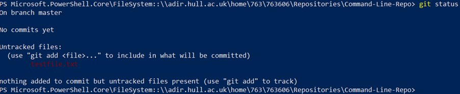
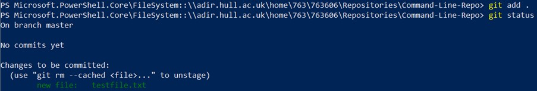
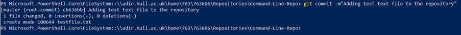

Now we have a repository of our own and we have linked it to GitHub the next step is to add some files of our own to our repo.
Drag (or create) a file of your choice into the repository folder and then return to the command line and enter the command
git status
This will return a list of files that git picks up within the repository that has been created. And should look like the image below.
As the response suggests git can find the file within the repository but it is currently “untracked”
Git will only manage a file that it has been specifically told to track, so, like the response from the command prompt suggests we need to do this manually. To do this use the command
git add .
*Note: this command adds all untracked files and folders to the repository - if you only wish to add individual files to the commit you can do so by writing git add and then the name of the file – including its extension - e.g. git add testfile.txt*
This will add everything in the folder to the stage, meaning that it is now managed by git.
View the status again and you will now see the files are being picked up by GIT within the respoitory.
Now Git is picking up our now files we need to commit them so that they are saved to the repository.
.We do this by using the command: git commit –m “A message about the commit here”
This tells git that we are committing the files it currently has on the stage. The message you add here should be clear show exactly what changes you are making to the repository.
When you have written the command and the message press enter and the command line will update to inform you that the files you added have been committed to the repository.
Currently, the repository only exists locally, and if we want to push our changes to GitHub there are a few more steps that we need to complete - These steps can be found in the next section.